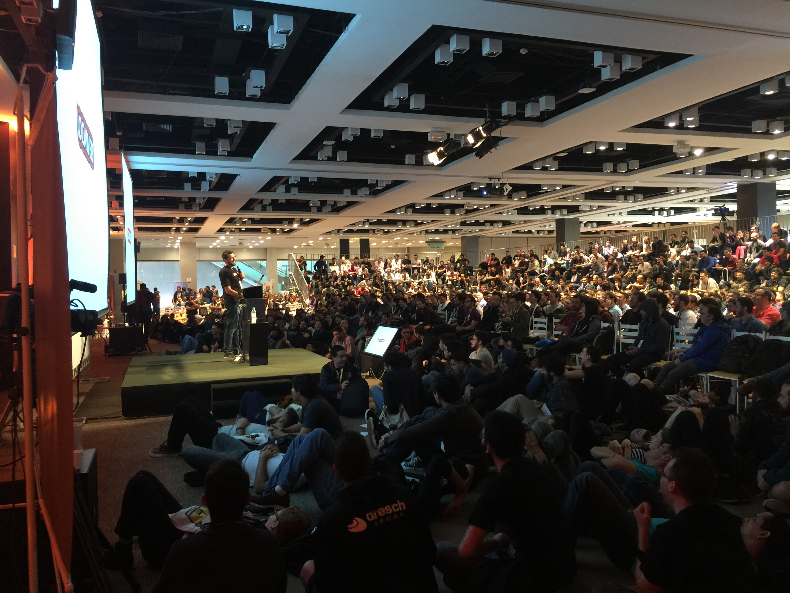
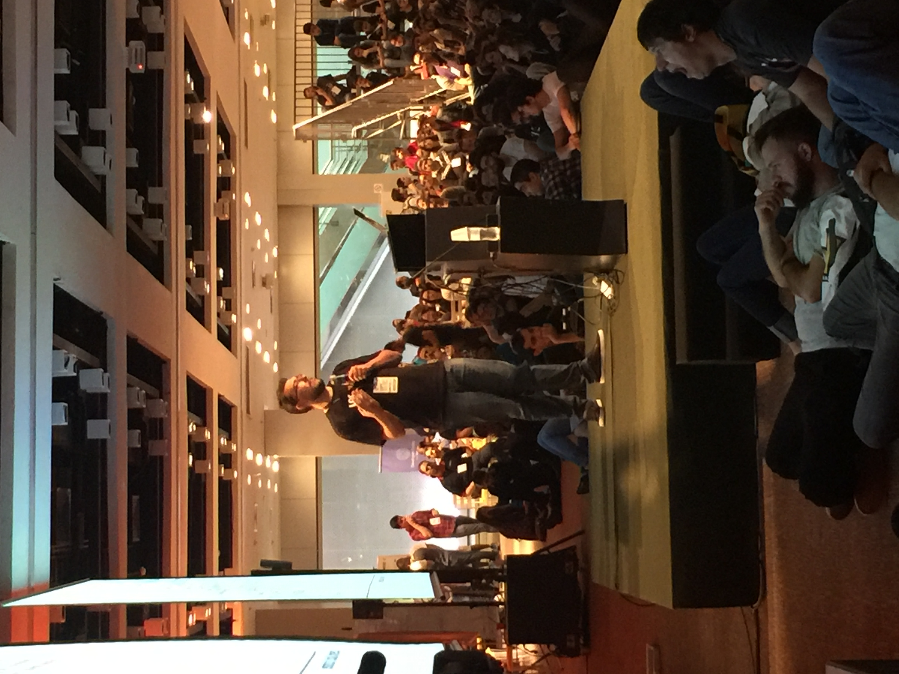
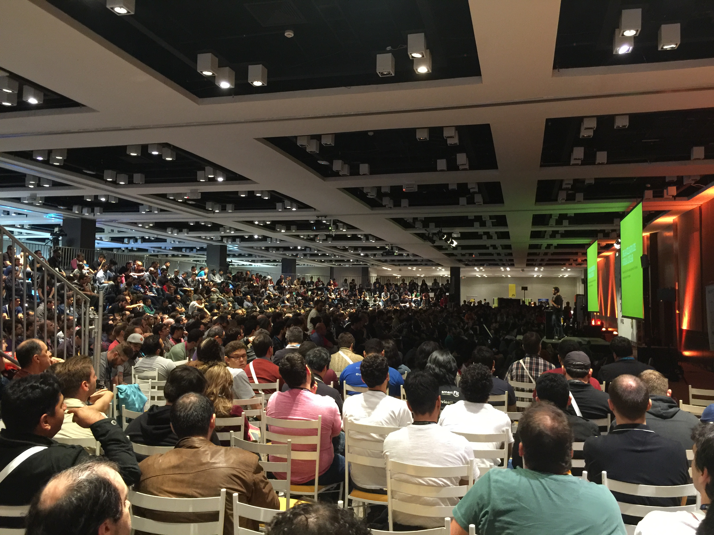

Artigos da tag 'javascript'
Node.js - o back-end do front-end
O Node.js se tornou popular a partir de 2009 quando Ryan Dahl, criador do Node.js, divulgou seu projeto para o mundo. De lá para cá ele só tem crescido e ajudado o JavaScript a se popularizar ainda...
Ler postHello World com React desde o rascunho
Há muito tempo eu queria fazer um Hello World com React, mas nunca tinha tempo por que eu mudei de área fazem uns 3 anos, ficando mais na parte de gestão de produtos e times, deixando totalmente o desenvolvimento...
Ler postBrazilJS 2016 - Sobre o básico de JSON-LD e Web Semântica
Esses são os slides da minha palestra feita no BrazilJS de 2016.
  
Ler postLinked Data e JSON-LD
Antes de entrarmos em como esse negócio de JSON-LD e Linked Data, queria falar um pouco sobre como a internet funciona. Organização da Informação na web é um dos assuntos que mais me fascinam no mundo...
Ler postAnotações - Palestra do Jean Carlo Emer - Aplicações Web com React
O que consegui anotar da palestra do Jean Carlo Emer sobre Aplicações React no 18 Encontro Locaweb em Belo Horizonte o dia 07/04/2016.
- Aplicações possuem diferentes estados em uma única página.
Can web make ES6 the baseline of the Modern Web?
Minhas anotações sobre a palestra que Chris Heilmann fez no BrazilJS de 2014.
- Os devs esperam muito que a inovação venha de empresas como Mozilla, Apple, Microsoft.
- Em uma banda de música, o cara...